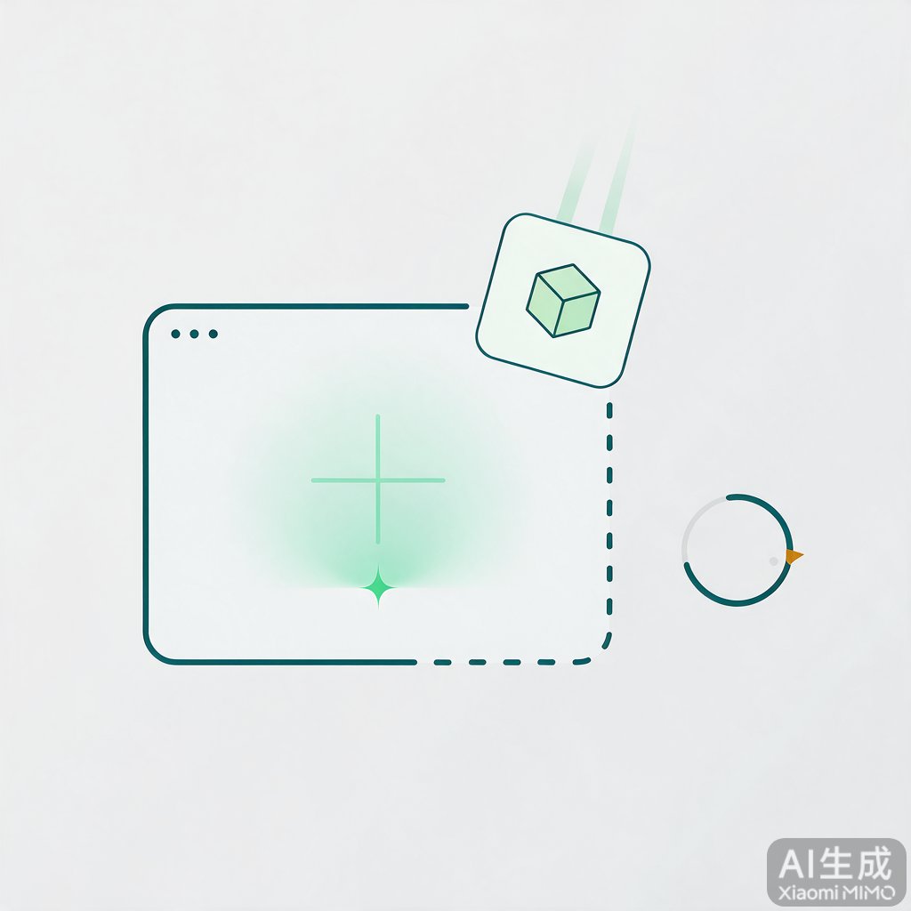
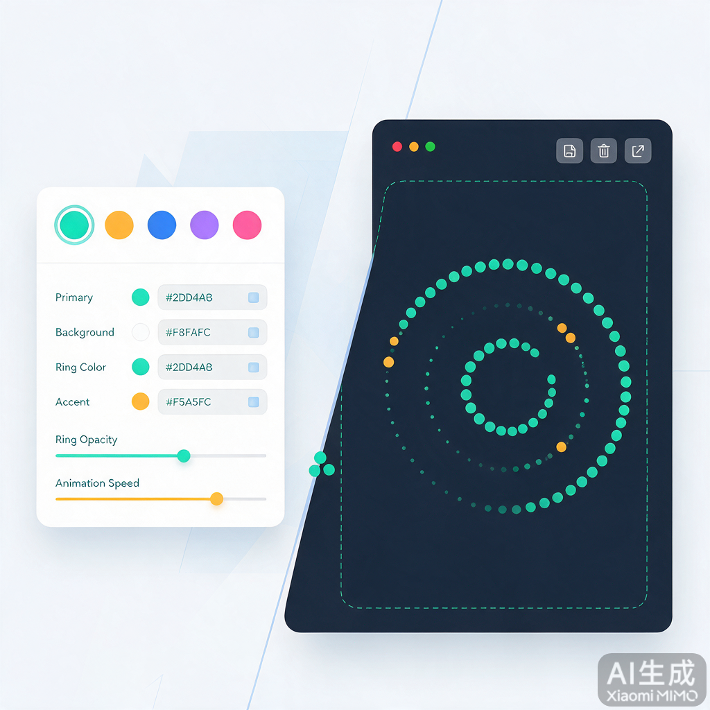

多 Tab 隔离
每个插件独立 WebContentsView 与 persist:plugin-{id} 会话，Cookie / 本地存储互不干扰，关闭 Tab 立即销毁进程。
从安装、隔离到主题与数据，eNest 把「可扩展桌面」需要的底座一次配齐。
每个插件独立 WebContentsView 与 persist:plugin-{id} 会话，Cookie / 本地存储互不干扰，关闭 Tab 立即销毁进程。
市场一键安装，或开发者控制台「加载本地目录」指向含 plugin.json 的文件夹。热加载，改完即看。
浅色 / 深色 / 跟随系统；CSS Token 可调，支持背景图与视频。主题插件可动态注册，插件经 themeAware 接收注入。
preload 注入 window.enest（别名 zapi），覆盖 UI、存储、剪贴板、通知与设置注册，按 permissions 校验 IPC。
本地目录热加载、Vite HMR、DevTools 一键打开，对标 uTools 开发台体验。调试链路完整，示例插件开箱即用。
数据根目录 ~/eNest，sql.js 真 SQLite 写入 data/enest.db。本地优先，不依赖云端账号。


插件 = 本地 Web 应用 + plugin.json 清单。壳子负责安装、隔离、Tab 与 API 白名单。
下载对应平台安装包，或从源码启动开发版。
npm install
npm run dev最小结构：入口 HTML + 清单。示例见仓库 plugins-samples/hello。
my-plugin/
├── plugin.json
└── index.html开发者控制台加载本地目录，热重载 + DevTools。权限不足时会收到明确错误码。
# 市场示例一键安装
# 或「加载本地目录」参考 uTools 插件模型：清单 + Web 入口 + 受控 API。 eNest 用 Electron 原生多 View 实现真正的进程隔离与多 Tab。
plugin.json 完整字段与校验// plugin.json 最小示例
{
"id": "com.example.hello",
"name": "Hello eNest",
"version": "1.0.0",
"main": "index.html",
"permissions": [
"clipboard",
"notify"
],
"ui": {
"chrome": "default",
"themeAware": true
}
}